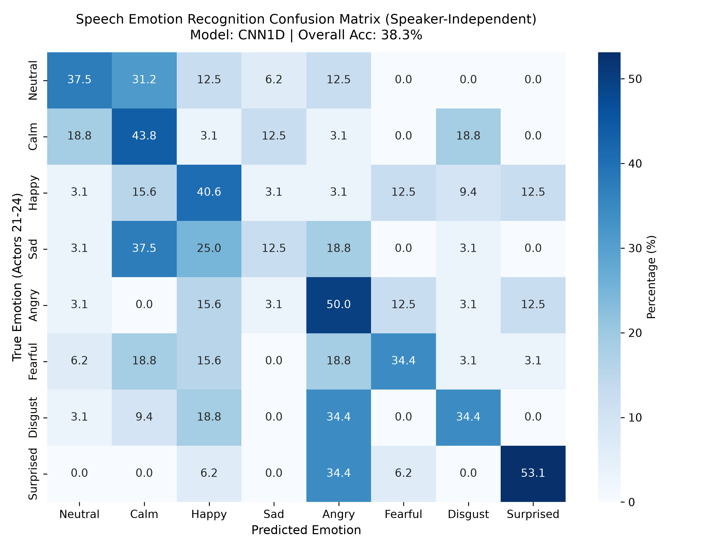
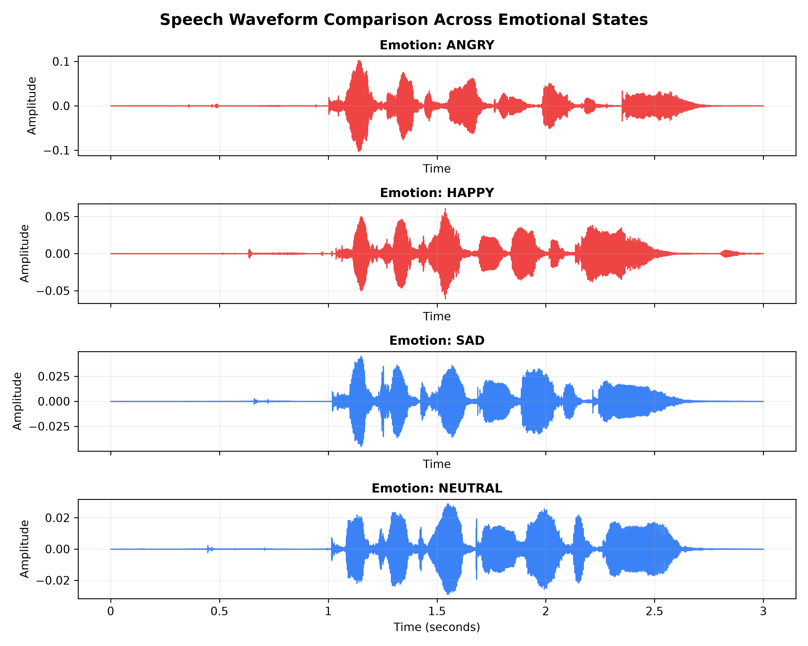
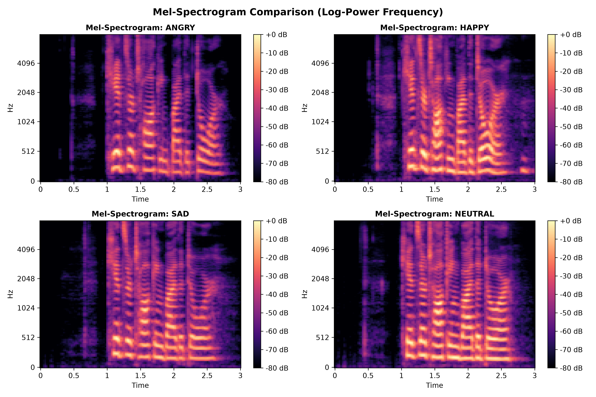

Classifying emotional prosody in speech using 40-band MFCC representations and deep convolutional networks, evaluated strictly on unseen actors (zero speaker leakage).
Evaluating cross-speaker generalization. Subtle emotions (Sadness, Neutral) have compressed dynamic range and are harder to classify than high-arousal emotions (Surprise, Anger).
| Emotion | Precision | Recall | F1-Score | Arousal |
|---|---|---|---|---|
| Loading per-class metrics... | ||||
Hover or tap any cell in the 8×8 matrix to inspect exact percentages and read the underlying acoustic prosody reasons for confusion.
Human speakers have distinct anatomical traits: vocal tract length, fundamental pitch ($F_0$), and formants. Random splitting lets the network memorize who is speaking rather than what emotion is expressed.
Audio clips are standardized to 22.05 kHz and transformed into prosodic descriptors:
Generated exploratory acoustic plots showing acoustic energy distinctions across high-arousal (Angry, Happy) vs low-arousal (Sad, Neutral) speech:


